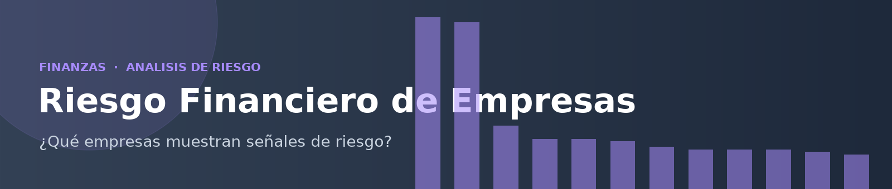

Ratios financieros + score de riesgo compuesto. Autor: pablomzzz.
Filtros
Score de riesgo por empresa (0-100)
Liquidez vs Endeudamiento
Abajo-derecha (baja liquidez, alto endeudamiento) = zona de riesgo. Color = score.

Ratios financieros + score de riesgo compuesto. Autor: pablomzzz.
Abajo-derecha (baja liquidez, alto endeudamiento) = zona de riesgo. Color = score.